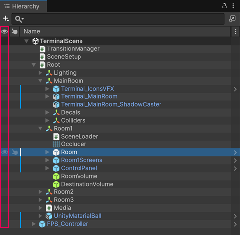

You can set scene visibility for individual GameObjects from the Visibility column in the Hierarchy window.
The scene visibility icon displays in the Visibility column when you hover over a GameObject in the Hierarchy window or when you select that GameObject. If a GameObject is hidden, its scene visibility icon always displays in the Hierarchy window. To review the different icon states of the scene visibility icon, refer to Scene visibility icons.
When you toggle visibility for a GameObject, the change applies to all its child GameObjects. Because you can toggle visibility for a whole branch or a single GameObject, you can have visible GameObjects with hidden child or parent GameObjects. To help you track each GameObject’s visibility, the visibility icon changes to indicate each GameObject’s status.
Tip: You can also disable scene visibility in the Scene view to temporarily display all hidden GameObjects.

To hide a GameObject and its child GameObjects in the Scene view, do one of the following:
To hide multiple GameObjects in the Scene view, select them in the Hierarchy window, then do one of the following:
You can toggle the visibility for a single GameObject and not affect its child GameObjects. They retain whatever visibility status they had previously.
To hide a GameObject but not its child GameObjects: